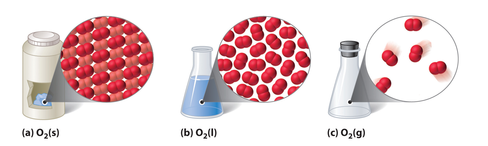
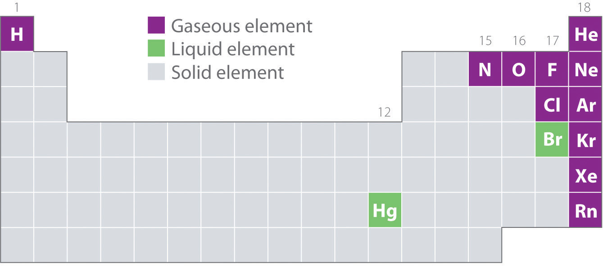

The three common phases (or states) of matter are gases, liquids, and solids. Gases have the lowest density of the three, are highly compressible, and completely fill any container in which they are placed. Gases behave this way because their intermolecular forces are relatively weak, so their molecules are constantly moving independently of the other molecules present. Solids, in contrast, are relatively dense, rigid, and incompressible because their intermolecular forces are so strong that the molecules are essentially locked in place. Liquids are relatively dense and incompressible, like solids, but they flow readily to adapt to the shape of their containers, like gases. We can therefore conclude that the sum of the intermolecular forces in liquids are between those of gases and solids. Figure 10.1 "A Diatomic Substance (O" compares the three states of matter and illustrates the differences at the molecular level.
Figure 10.1 A Diatomic Substance (O2) in the Solid, Liquid, and Gaseous States
(a) Solid O2 has a fixed volume and shape, and the molecules are packed tightly together. (b) Liquid O2 conforms to the shape of its container but has a fixed volume; it contains relatively densely packed molecules. (c) Gaseous O2 fills its container completely—regardless of the container’s size or shape—and consists of widely separated molecules.
The state of a given substance depends strongly on conditions. For example, H2O is commonly found in all three states: solid ice, liquid water, and water vapor (its gaseous form). Under most conditions, we encounter water as the liquid that is essential for life; we drink it, cook with it, and bathe in it. When the temperature is cold enough to transform the liquid to ice, we can ski or skate on it, pack it into a snowball or snow cone, and even build dwellings with it. Water vaporThe distinction between a gas and a vapor is subtle: the term vapor refers to the gaseous form of a substance that is a liquid or a solid under normal conditions (25°C, 1.0 atm). Nitrogen (N2) and oxygen (O2) are thus referred to as gases, but gaseous water in the atmosphere is called water vapor. is a component of the air we breathe, and it is produced whenever we heat water for cooking food or making coffee or tea. Water vapor at temperatures greater than 100°C is called steam. Steam is used to drive large machinery, including turbines that generate electricity. The properties of the three states of water are summarized in Table 10.1 "Properties of Water at 1.0 atm".
Table 10.1 Properties of Water at 1.0 atm
| Temperature | State | Density (g/cm3) |
|---|---|---|
| ≤0°C | solid (ice) | 0.9167 (at 0.0°C) |
| 0°C–100°C | liquid (water) | 0.9997 (at 4.0°C) |
| ≥100°C | vapor (steam) | 0.005476 (at 127°C) |
The geometric structure and the physical and chemical properties of atoms, ions, and molecules usually do not depend on their physical state; the individual water molecules in ice, liquid water, and steam, for example, are all identical. In contrast, the macroscopic properties of a substance depend strongly on its physical state, which is determined by intermolecular forces and conditions such as temperature and pressure.
Figure 10.2 "Elements That Occur Naturally as Gases, Liquids, and Solids at 25°C and 1 atm" shows the locations in the periodic table of those elements that are commonly found in the gaseous, liquid, and solid states. Except for hydrogen, the elements that occur naturally as gases are on the right side of the periodic table. Of these, all the noble gases (group 18) are monatomic gases, whereas the other gaseous elements are diatomic molecules (H2, N2, O2, F2, and Cl2). Oxygen can also form a second allotrope, the highly reactive triatomic molecule ozone (O3), which is also a gas. In contrast, bromine (as Br2) and mercury (Hg) are liquids under normal conditions (25°C and 1.0 atm, commonly referred to as “room temperature and pressure”). Gallium (Ga), which melts at only 29.76°C, can be converted to a liquid simply by holding a container of it in your hand or keeping it in a non-air-conditioned room on a hot summer day. The rest of the elements are all solids under normal conditions.
Figure 10.2 Elements That Occur Naturally as Gases, Liquids, and Solids at 25°C and 1 atm
The noble gases and mercury occur as monatomic species, whereas all other gases and bromine are diatomic molecules.
Many of the elements and compounds we have encountered so far are typically found as gases; some of the more common ones are listed in Table 10.2 "Some Common Substances That Are Gases at 25°C and 1.0 atm". Gaseous substances include many binary hydrides, such as the hydrogen halides (HX); hydrides of the chalcogens; hydrides of the group 15 elements N, P, and As; hydrides of the group 14 elements C, Si, and Ge; and diborane (B2H6). In addition, many of the simple covalent oxides of the nonmetals are gases, such as CO, CO2, NO, NO2, SO2, SO3, and ClO2. Many low-molecular-mass organic compounds are gases as well, including all the hydrocarbons with four or fewer carbon atoms and simple molecules such as dimethyl ether [(CH3)2O], methyl chloride (CH3Cl), formaldehyde (CH2O), and acetaldehyde (CH3CHO). Finally, most of the commonly used refrigerants, such as the chlorofluorocarbons (CFCs) and the hydrochlorofluorocarbons (HCFCs), which were discussed in Chapter 3 "Chemical Reactions", are gases.
Table 10.2 Some Common Substances That Are Gases at 25°C and 1.0 atm
| Elements | Compounds | |
|---|---|---|
| He (helium) | HF (hydrogen fluoride) | C2H4 (ethylene) |
| Ne (neon) | HCl (hydrogen chloride) | C2H2 (acetylene) |
| Ar (argon) | HBr (hydrogen bromide) | C3H8 (propane) |
| Kr (krypton) | HI (hydrogen iodide) | C4H10 (butane) |
| Xe (xenon) | HCN (hydrogen cyanide)* | CO (carbon monoxide) |
| Rn (radon) | H2S (hydrogen sulfide) | CO2 (carbon dioxide) |
| H2 (hydrogen) | NH3 (ammonia) | NO (nitric oxide) |
| N2 (nitrogen) | PH3 (phosphine) | N2O (nitrous oxide) |
| O2 (oxygen) | CH4 (methane) | NO2 (nitrogen dioxide) |
| O3 (ozone) | C2H6 (ethane) | SO2 (sulfur dioxide) |
| F2 (fluorine) | ||
| Cl2 (chlorine) | ||
| *HCN boils at 26°C at 1 atm, so it is included in this table. | ||
All of the gaseous substances mentioned previously (other than the monatomic noble gases) contain covalent or polar covalent bonds and are nonpolar or polar molecules. In contrast, the strong electrostatic attractions in ionic compounds, such as NaBr (boiling point = 1390°C) or LiF (boiling point = 1673°C), prevent them from existing as gases at room temperature and pressure. In addition, the lightest members of any given family of compounds are most likely gases, and the boiling points of polar compounds are generally greater than those of nonpolar compounds of similar molecular mass. Therefore, in a given series of compounds, the lightest and least polar members are the ones most likely to be gases. With relatively few exceptions, however, compounds with more than about five atoms from period 2 or below are too heavy to exist as gases under normal conditions.
Gaseous substances often contain covalent or polar covalent bonds, exist as nonpolar or slightly polar molecules, have relatively low molecular masses, and contain five or fewer atoms from periods 1 or 2.
While gases have a wide array of uses, a particularly grim use of a gaseous substance is believed to have been employed by the Persians on the Roman city of Dura in eastern Syria in the third century AD. The Persians dug a tunnel underneath the city wall to enter and conquer the city. Archeological evidence suggests that when the Romans responded with counter-tunnels to stop the siege, the Persians ignited bitumen and sulfur crystals to produce a dense, poisonous gas. It is likely that bellows or chimneys distributed the toxic fumes. The remains of about 20 Roman soldiers were discovered at the base of the city wall at the entrance to a tunnel that was less than 2 m high and 11 m long. Because it is highly unlikely that the Persians could have slaughtered so many Romans at the entrance to such a confined space, archeologists speculate that the ancient Persians used chemical warfare to successfully conquer the city.
Which compounds would you predict to be gases at room temperature and pressure?
Given: compounds
Asked for: physical state
Strategy:
A Decide whether each compound is ionic or covalent. An ionic compound is most likely a solid at room temperature and pressure, whereas a covalent compound may be a solid, a liquid, or a gas.
B Among the covalent compounds, those that are relatively nonpolar and have low molecular masses are most likely gases at room temperature and pressure.
Solution:
A Lithium carbonate is Li2CO3, containing Li+ and CO32− ions, and vanadium(III) oxide is V2O3, containing V3+ and O2− ions. Both are primarily ionic compounds that are expected to be solids. The remaining three compounds are all covalent.
B Benzoic acid has more than four carbon atoms and is polar, so it is not likely to be a gas. Both cyclohexene and cyclobutane are essentially nonpolar molecules, but cyclobutane (C4H8) has a significantly lower molecular mass than cyclohexene (C6H10), which again has more than four carbon atoms. We therefore predict that cyclobutane is most likely a gas at room temperature and pressure, while cyclohexene is a liquid. In fact, with a boiling point of only 12°C, compared to 83°C for cyclohexene, cyclobutane is indeed a gas at room temperature and pressure.
Exercise
Which compounds would you predict to be gases at room temperature and pressure?
ethylene oxide
Answer: c; d
Bulk matter can exist in three states: gas, liquid, and solid. Gases have the lowest density of the three, are highly compressible, and fill their containers completely. Elements that exist as gases at room temperature and pressure are clustered on the right side of the periodic table; they occur as either monatomic gases (the noble gases) or diatomic molecules (some halogens, N2, O2). Many inorganic and organic compounds with four or fewer nonhydrogen atoms are also gases at room temperature and pressure. All gaseous substances are characterized by weak interactions between the constituent molecules or atoms.
Explain the differences between the microscopic and the macroscopic properties of matter. Is the boiling point of a compound a microscopic or macroscopic property? molecular mass? Why?
Determine whether the melting point, the dipole moment, and electrical conductivity are macroscopic or microscopic properties of matter and explain your reasoning.
How do the microscopic properties of matter influence the macroscopic properties? Can you relate molecular mass to boiling point? Why or why not? Can polarity be related to boiling point?
For a substance that has gas, liquid, and solid phases, arrange these phases in order of increasing
Explain what is wrong with this statement: “The state of matter largely determines the molecular properties of a substance.”
Describe the most important factors that determine the state of a given compound. What external conditions influence whether a substance exists in any one of the three states of matter?
Which elements of the periodic table exist as gases at room temperature and pressure? Of these, which are diatomic molecules and which are monatomic? Which elements are liquids at room temperature and pressure? Which portion of the periodic table contains elements whose binary hydrides are most likely gases at room temperature?
Is the following observation correct? “Almost all nonmetal binary hydrides are gases at room temperature, but metal hydrides are all solids.” Explain your reasoning.
Is the following observation correct? “All the hydrides of the chalcogens are gases at room temperature and pressure except the binary hydride of oxygen, which is a liquid.” Explain your reasoning. Would you expect 1-chloropropane to be a gas? iodopropane? Why?
Explain why ionic compounds are not gases under normal conditions.
The molecular properties of a substance control its state of matter under a given set of conditions, not the other way around. The presence of strong intermolecular forces favors a condensed state of matter (liquid or solid), while very weak intermolecular interaction favor the gaseous state. In addition, the shape of the molecules dictates whether a condensed phase is a liquid or a solid.
Elements that exist as gases are mainly found in the upper right corner and on the right side of the periodic table. The following elements exist as gases: H, He, N, O, F, Ne, Cl, Ar, Kr, Xe, and Rn. Thus, half of the halogens, all of the noble gases, and the lightest chalcogens and picnogens are gases. Of these, all except the noble gases exist as diatomic molecules. Only two elements exist as liquids at a normal room temperature of 20°C–25°C: mercury and bromine. The upper right portion of the periodic table also includes most of the elements whose binary hydrides are gases. In addition, the binary hydrides of the elements of Groups 14–16 are gases.